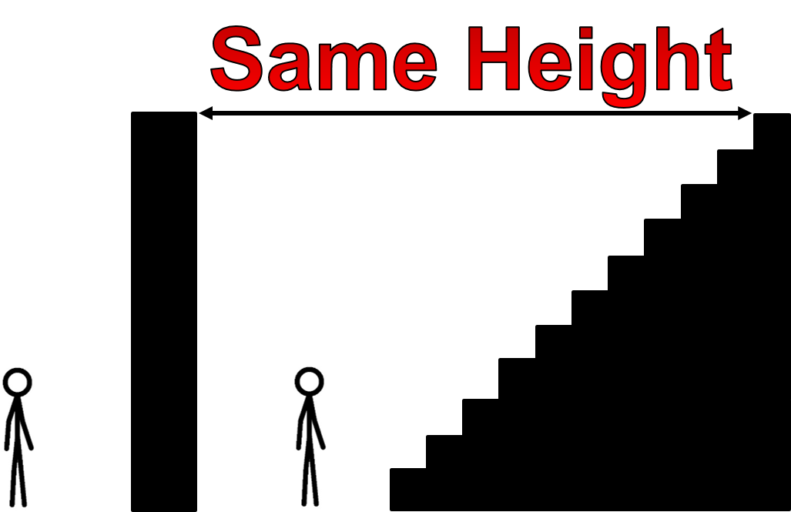
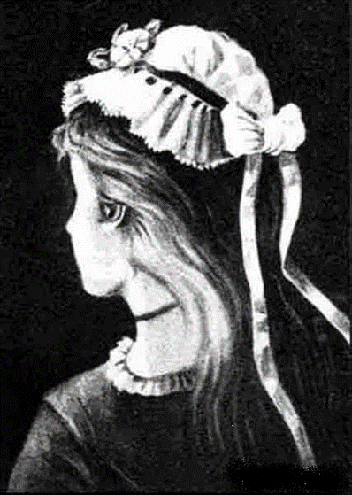

Computational Thinking
Table of Contents
1 Decomposition
Learn It: Decomposition
Let's break it down!
- Decomposition is the process of breaking a problem down into smaller problems which can be solved much easier
- It is one of the four cornerstones of Computational Thinking
- Think of it like being faced with a 15ft wall. It's unrealistic to think you could just jump/climb to the top.
- However, if we break that wall down into 15 1ft tall steps, we can tackle one step at a time to make it to the top.

Checkmate..
- Let's think of another example… Chess!.
- If we were going to create a program for a chess game, it'd seem quite daunting at first.
- However, if we Decompose the problem, we see the individual problems within a chess game.

- Starting with just /"chess game"/ we can Decompose it into 5 problems which are easier to solve.
- But this can be Decomposed even further…

- This is now much easier to understand and can be used to create a flowchart or pseudocode.
Badge It: Rock…Paper…Scisssors!
Silver Upload to Algorithms - Decomposition: Silver on BourneToLearn
- Decompose the game of Rock Paper Scissors
- You can do this as a numbered list or bullet pointed list
Gold Upload to Algorithms - Decomposition: Gold on BourneToLearn
- Use your silver decomposition to create a flowchart

- Make sure you use the correct symbols!
Platinum Upload to Algorithms - Decomposition: Platinum on BourneToLearn
- Using your numbered list or bullet pointed list and flowchart, write the solution in Python
2 Abstraction
Learn It: Abstraction
- Abstraction is the process of removing unneccesary details until all that remains is what is needed to solve the problem
- It is also one of the four cornerstones of Computational Thinking
- We use this to make the problem more simple but also consiquently less realistic
- Watch the video below and see if you can spot how Abstraction is used
Badge It: Definition & Classroom Example
Task - Gold
- Perform Abstraction on this classroom
- Think about what details can be Abstracted
- Do we need the walls? chairs? keyboards? Think about the seating plan as an example
- Produce an Abstracted image of the classroom (Paint/Word/PowerPoint)
3 Pattern Recognition
Learn It: Pattern Recognition
- Pattern Recognition is something we all do everyday.
- It is also one of the four cornerstones of Computational Thinking
- Without being told, we can find patterns in data.
- For example, a set of numbers 2, 4, 8, 16, 32, 64.
- Can you guess what the next number will be?
- …
- …
- …
- Ping!
- That's right! 124!
- We can assume that the next number will be 124 because we recognise the pattern of squaring 2.
- This pattern also relates to Binary
Try It: Illusion Example
Old or Young Woman?
- Can you see a Pattern in this image?
- Some people see a young woman, some see an old woman

- This is to do with how our brain automatically recognises patterns in pictures we look at